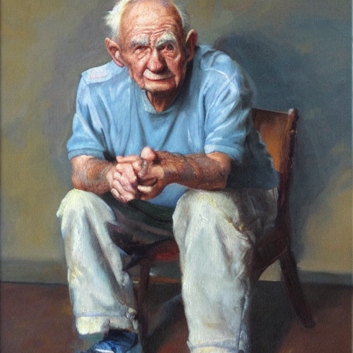

Project Overview
This project utilizes the Stable Diffusion model to generate high-quality images from user-provided text prompts.
Features
- Text-to-Image Generation: Generates images based on user-defined prompts.
- Customizable Parameters: Control the number of images, guidance scale, and inference steps.
- Interactive CLI: Simple command-line interface for user interaction.
- Image Saving: Automatically saves generated images to a specified directory.
How It Works
- The user provides a text prompt and specifies the number of images to generate via the CLI.
- The model generates images based on the prompt, which are saved in the specified output directory.
- The user can optionally display the first generated image directly from the CLI.
Sample Outputs
Input: "A majestic Bengal tiger with vibrant orange fur and black stripes in a lush tropical rainforest, dappled sunlight filtering through the canopy, creating a sense of tension and anticipation."
Input: "Grumpy old man, realistic oil painting, seated pose slightly off-center, focusing on facial expressions, with natural muted colors and soft ambient lighting."
Acknowledgments
This project leverages the Stable Diffusion model by Hugging Face and PyTorch for efficient image generation. Special thanks to the open-source community for providing these tools.
For a detailed look at the full project and its source code, please visit the GitHub repository.
I welcome professional connections and discussions about this project or related topics. Feel free to connect with me on LinkedIn.
To learn more about my other projects and professional background, you can visit my personal website.